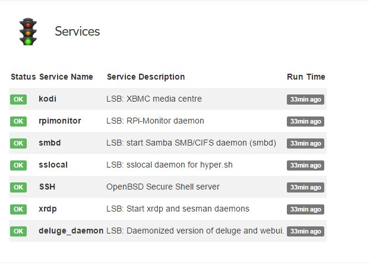

Configuration examples¶
Monitoring a WiFi network¶
The following configuration is showing how to configure the monitoring WiFi
interface wlan0
To extract metrics representing the trafic on the interface we need to create
a dynamic configuration to collect data in pseudo file system
/sys/class/net/wlan0/statistics/.
Collecting metrics¶
dynamic.1.name=wifi_received
dynamic.1.source=/sys/class/net/wlan0/statistics/rx_bytes
dynamic.1.regexp=(.*)
dynamic.1.postprocess=$1*-1
dynamic.1.rrd=DERIVE
dynamic.2.name=wifi_send
dynamic.2.source=/sys/class/net/wlan0/statistics/tx_bytes
dynamic.2.regexp=(.*)
dynamic.2.postprocess=
dynamic.2.rrd=DERIVE
Note
We dicided to represent downstream data with negative values. This is
performed by the postprocess command: $1*-1
Add status¶
The collected metrics will be displayed in status page as define in the
configuration bellow:
web.status.1.content.1.title=WiFi
web.status.1.content.1.icon=wifi.png
web.status.1.content.1.line.1="WiFi Sent: <b>"+KMG(data.wifi_send)+"<i class='icon-arrow-up'></i></b> Received: <b>"+KMG(Math.abs(data.wifi_received)) + "<i class='icon-arrow-down'></i></b>"
Add statistics¶
The following configuration add one graph to statistics page with the 2 curves representing upstream and downstream metrics:
web.statistics.1.content.1.title=WiFi
web.statistics.1.content.1.graph.1=wifi_send
web.statistics.1.content.1.graph.2=wifi_received
web.statistics.1.content.1.ds_graph_options.wifi_send.label=Upload bandwidth (bits)
web.statistics.1.content.1.ds_graph_options.wifi_send.lines={ fill: true }
web.statistics.1.content.1.ds_graph_options.wifi_send.color="#FF7777"
web.statistics.1.content.1.ds_graph_options.wifi_received.label=Download bandwidth (bits)
web.statistics.1.content.1.ds_graph_options.wifi_received.lines={ fill: true }
web.statistics.1.content.1.ds_graph_options.wifi_received.color="#77FF77"
In this configuration, we set color to green for downstream and red for upstream. The curves are filled.
Important
To apply the configuration, it is required to restart RPi-Monitor : /etc/init.d/rpimonotird restart
Monitor external disk¶
The disk have a disk with two partition /dev/sda1 and /dev/sda3.
The command and regular expression will be the following:
- sda1 disk size command :
df -t ext2, regular expression: sda1\s+(\d+) - sda1 used space command :
df -t ext2, regular expression: sda1\s+\d+\s+(\d+) - sda3 disk size command :
df -t ext4, regular expression: sda3\s+(\d+) - sda3 used space command :
df -t ext4, regular expression: sda3\s+\d+\s+(\d+)
First we need to configure the extraction of partitions sizes which are extracted once at RPi-Monitor startup. We will create a file /etc/rpimonitord.conf.d/custo.conf with the data configured as static data like this:
static.1.name=storage1_total
static.1.source=df -t ext2
static.1.regexp=sda1\s+(\d+)
static.1.postprocess=$1/1024
static.2.name=storage2_total
static.2.source=df -t ext4
static.2.regexp=sda3\s+(\d+)
static.2.postprocess=$1/1024
The post processing is configured to transform kB into MB by dividing the extracted result by 1024.
For dynamic values extracted every 10 seconds, the configuration will be:
dynamic.1.name=storage1_used
dynamic.1.source=df -t ext2
dynamic.1.regexp=sda1\s+\d+\s+(\d+)
dynamic.1.postprocess=$1/1024
dynamic.1.rrd=GAUGE
dynamic.2.name=storage2_used
dynamic.2.source=df -t ext4
dynamic.2.regexp=sda3\s+\d+\s+(\d+)
dynamic.2.postprocess=$1/1024
dynamic.2.rrd=GAUGE
Dynamic stat will be stored into a RRD File as GAUGE. Ref to RRDTool help for detail about Data Source Types.
Now we will add a status line for this disk whit the following icon:
This icons has to be installed into the img directory of RPi-Monitor which is
by default /usr/share/rpimonitor/web/img/.
The configuration to add a new status strip will then be the following:
web.status.1.content.1.title=Storage
web.status.1.content.1.icon=usb_hdd.png
web.status.1.content.1.line.1="<b>/storage1</b> Used: <b>"+KMG(data.storage1_used,'M')+"</b> (<b>"+Percent(data.storage1_used,data.storage1_total,'M')+"</b>) Free: <b>"+KMG(data.storage1_total-data.storage1_used,'M')+ "</b> Total: <b>"+ KMG(data.storage1_total,'M') +"</b>" web.status.1.content.9.line.2=ProgressBar(data.storage1_used,data.storage1_total) web.status.1.content.9.line.3="<b>/storage2</b> Used: <b>"+KMG(data.storage2_used,'M')+"</b> (<b>"+Percent(data.storage2_used,data.storage2_total,'M')+"</b>) Free: <b>"+KMG(data.storage2_total-data.storage2_used,'M')+ "</b> Total: <b>"+ KMG(data.storage2_total,'M') +"</b>"
The configuration may need some explanation:
We do configure 4 lines. Each line is describing a javascript line using some
predefined functions: KMG, Precent and ProgressBar. This function are called by
the browser while rendering the page. Some variable coming from the extracted
data are also used. These variables are starting by the keyword data. For
deeper detail about this configuration execute the command man rpimonitord.conf
To see our modification we need to restart RPi-Monitor and refresh the statistics page into our browser.
sudo service rpimonitor restart
The result of the configuration is at the bottom of the following screenshot:
{kind=link}
The status page is working, let’s now add a graphic of the disk usage. This is done with the following configuration:
web.statistics.1.content.1.title=Storage1
web.statistics.1.content.1.graph.1=storage1_total
web.statistics.1.content.1.graph.2=storage1_used
web.statistics.1.content.1.ds_graph_options.storage1_total.label=Storage1 total space (MB)
web.statistics.1.content.1.ds_graph_options.storage1_total.color="#FF7777"
web.statistics.1.content.1.ds_graph_options.storage1_used.label=Storage1 used space (MB)
web.statistics.1.content.1.ds_graph_options.storage1_used.lines={ fill: true }
web.statistics.1.content.1.ds_graph_options.storage1_used.color="#7777FF"
web.statistics.1.content.2.title=Storage2
web.statistics.1.content.10.graph.1=storage2_total
web.statistics.1.content.2.graph.2=storage2_used
web.statistics.1.content.2.ds_graph_options.storage2_total.label=Storage2 total space (MB)
web.statistics.1.content.2.ds_graph_options.storage2_total.color="#FF7777"
web.statistics.1.content.2.ds_graph_options.storage2_used.label=Storage2 used space (MB)
web.statistics.1.content.2.ds_graph_options.storage2_used.lines={ fill: true }
web.statistics.1.content.2.ds_graph_options.storage2_used.color="#7777FF"
The configuration may also need some explanation
We do configure 2 graphs each having 2 curves. The first curve represent the total and is using static data extracted previously. This curve will be represented as a light red line.
The second curve is representing the usage of disk and is represented as a light blue line filled. The parameters defining the curve are define by the keyword ds_graph_options. Details of this parameter can be found in javascriptrrd help page. Restart rpimonitor to activate the new graph.
After waiting a little time to let the system extract data you will see this kind of graph.
{kind=link}
Advanced service monitoring configuration¶
Here is an example of configuration proposed by Münir Ozan TOPCU:
########################################################################
# Extract information about Services
#
########################################################################
dynamic.1.name=kodi_desc
dynamic.1.source=service kodi status | grep "kodi.service - "
dynamic.1.regexp=- (.*)
dynamic.2.name=kodi_act
dynamic.2.source=service kodi status | grep "Active: "
dynamic.2.regexp=(\(.*\))
dynamic.3.name=kodi_runtime
dynamic.3.source=service kodi status | grep "Active: "
dynamic.3.regexp=; (.*)
dynamic.4.name=rpimonitor_desc
dynamic.4.source=service rpimonitor status | grep "rpimonitor.service -"
dynamic.4.regexp=- (.*)
dynamic.5.name=rpimonitor_act
dynamic.5.source=service rpimonitor status | grep "Active: "
dynamic.5.regexp=(\(.*\))
dynamic.6.name=rpimonitor_runtime
dynamic.6.source=service rpimonitor status | grep "Active: "
dynamic.6.regexp=; (.*)
dynamic.7.name=smbd_desc
dynamic.7.source=service smbd status | grep "smbd.service - "
dynamic.7.regexp=- (.*)
dynamic.8.name=smbd_act
dynamic.8.source=service smbd status | grep "Active: "
dynamic.8.regexp=(\(.*\))
dynamic.9.name=smbd_runtime
dynamic.9.source=service smbd status | grep "Active: "
dynamic.9.regexp=; (.*)
dynamic.10.name=sslocal_desc
dynamic.10.source=service sslocal status | grep "sslocal.service - "
dynamic.10.regexp=- (.*)
dynamic.11.name=sslocal_act
dynamic.11.source=service sslocal status | grep "Active: "
dynamic.11.regexp=(\(.*\))
dynamic.12.name=sslocal_runtime
dynamic.12.source=service sslocal status | grep "Active: "
dynamic.12.regexp=; (.*)
dynamic.13.name=ssh_desc
dynamic.13.source=service ssh status | grep "ssh.service - "
dynamic.13.regexp=- (.*)
dynamic.14.name=ssh_act
dynamic.14.source=service ssh status | grep "Active: "
dynamic.14.regexp=(\(.*\))
dynamic.15.name=ssh_runtime
dynamic.15.source=service ssh status | grep "Active: "
dynamic.15.regexp=; (.*)
dynamic.16.name=xrdp_desc
dynamic.16.source=service xrdp status | grep "xrdp.service - "
dynamic.16.regexp=- (.*)
dynamic.17.name=xrdp_act
dynamic.17.source=service xrdp status | grep "Active: "
dynamic.17.regexp=(\(.*\))
dynamic.18.name=xrdp_runtime
dynamic.18.source=service xrdp status | grep "Active: "
dynamic.18.regexp=; (.*)
dynamic.19.name=deluge_daemon_desc
dynamic.19.source=service deluge-daemon status | grep "deluge-daemon.service - "
dynamic.19.regexp=- (.*)
dynamic.20.name=deluge_daemon_act
dynamic.20.source=service deluge-daemon status | grep "Active: "
dynamic.20.regexp=(\(.*\))
dynamic.21.name=deluge_daemon_runtime
dynamic.21.source=service deluge-daemon status | grep "Active: "
dynamic.21.regexp=; (.*)
web.status.1.content.1.title="Services"
web.status.1.content.1.icon=daemons.png
web.status.1.content.1.line.1="<style type=\"text/css\">.tg331 {border-collapse:collapse;border-spacing:0;}.tg331 tr:nth-child(even){background-color: #f2f2f2}.tg331 table{border: 0px solid #e9e9e9;}.tg331 td{font-family:Arial, sans-serif;font-size:14px;padding:12px 2px;border-style:solid;border-width:0px;overflow:hidden;word-break:normal;}.tg331 th{font-family:Arial, sans-serif;font-size:14px;font-weight:normal;padding:12px 2px;border-style:solid;border-width:0px;overflow:hidden;word-break:normal;}.tg331 .tg331-yw4l{vertical-align:top;text-align: left;}.tg331 hr {display: block;margin-top: 0.5em;margin-bottom: 0.5em;margin-left: auto;margin-right: auto;border-style: inset; border-width: 1px;}</style><table width=\"100%\" class=\"tg331\"><tr><td><b>Status</b></td><td><b>Service Name</b></td><td><b>Service Description</b></td><td><b>Run Time</b></td></tr><tr><td>"+Label(data.kodi_act,"=='(running)'","OK","success")+Label(data.kodi_act,"!='(running)'","KO","danger")+"</td><td><b>kodi</b></td><td>" + data.kodi_desc + "</td><td>"+Label(data.kodi_act,"=='(running)'",data.kodi_runtime,"default")+Label(data.kodi_act,"!='(running)'","-","default")+"</td></tr><tr><td>"+Label(data.rpimonitor_act,"=='(running)'","OK","success")+Label(data.rpimonitor_act,"!='(running)'","KO","danger")+"</td><td><b>rpimonitor</b></td><td>" + data.rpimonitor_desc + "</td><td>"+Label(data.rpimonitor_act,"=='(running)'",data.rpimonitor_runtime,"default")+Label(data.rpimonitor_act,"!='(running)'","-","default")+"</td></tr><tr><td>"+Label(data.smbd_act,"=='(running)'","OK","success")+Label(data.smbd_act,"!='(running)'","KO","danger")+"</td><td><b>smbd</b></td><td>" + data.smbd_desc + "</td><td>"+Label(data.smbd_act,"=='(running)'",data.smbd_runtime,"default")+Label(data.smbd_act,"!='(running)'","-","default")+"</td></tr><tr><td>"+Label(data.sslocal_act,"=='(running)'","OK","success")+Label(data.sslocal_act,"!='(running)'","KO","danger")+"</td><td><b>sslocal</b></td><td>" + data.sslocal_desc + "</td><td>"+Label(data.sslocal_act,"=='(running)'",data.sslocal_runtime,"default")+Label(data.sslocal_act,"!='(running)'","-","default")+"</td></tr><tr><td>"+Label(data.ssh_act,"=='(running)'","OK","success")+Label(data.ssh_act,"!='(running)'","KO","danger")+"</td><td><b>SSH</b></td><td>" + data.ssh_desc + "</td><td>"+Label(data.ssh_act,"=='(running)'",data.ssh_runtime,"default")+Label(data.ssh_act,"!='(running)'","-","default")+"</td></tr><tr><td>"+Label(data.xrdp_act,"=='(running)'","OK","success")+Label(data.xrdp_act,"!='(running)'","KO","danger")+"</td><td><b>xrdp</b></td><td>" + data.xrdp_desc + "</td><td>"+Label(data.xrdp_act,"=='(running)'",data.xrdp_runtime,"default")+Label(data.xrdp_act,"!='(running)'","-","default")+"</td></tr><tr><td>"+Label(data.deluge_daemon_act,"=='(running)'","OK","success")+Label(data.deluge_daemon_act,"!='(running)'","KO","danger")+"</td><td><b>deluge_daemon</b></td><td>" + data.deluge_daemon_desc + "</td><td>"+Label(data.deluge_daemon_act,"=='(running)'",data.deluge_daemon_runtime,"default")+Label(data.deluge_daemon_act,"!='(running)'","-","default")+"</td></tr></table>"
Here is the result:
Monitor rclone¶
Use MRTG with RPi-Monitor in read-only mode¶
Monitor a TOR relay¶
Here is an example of configuration proposed by Luiz Kill: on tor-info
# Tor relay information
# Page: 1
# Information Status Statistics
# - received - yes - yes
# - send - yes - yes
########################################################################
static.100.name=tor_bw_rate1
static.100.source=/usr/local/etc/tor/torrc
static.100.regexp=RelayBandwidthRate\s+(\d+)
static.100.postprocess=$1*-1
static.101.name=tor_bw_burst1
static.101.source=/usr/local/etc/tor/torrc
static.101.regexp=RelayBandwidthBurst\s+(\d+)
static.101.postprocess=$1*-1
static.102.name=tor_bw_rate2
static.102.source=/usr/local/etc/tor/torrc
static.102.regexp=RelayBandwidthRate\s+(\d+)
static.102.postprocess=$1*1
static.103.name=tor_bw_burst2
static.103.source=/usr/local/etc/tor/torrc
static.103.regexp=RelayBandwidthBurst\s+(\d+)
static.103.postprocess=$1*1
static.104.name=tor_nickname
static.104.source=/var/lib/rpimonitor/stat/tor_desc
static.104.regexp=Nickname.(.*)
static.104.postprocess=
static.105.name=tor_fingerprint
static.105.source=/var/lib/rpimonitor/stat/tor_desc
static.105.regexp=Fingerprint.(.*)
static.105.postprocess=
static.106.name=tor_version
static.106.source=/var/lib/rpimonitor/stat/tor_desc
static.106.regexp=Version.(.*)
static.106.postprocess=
static.107.name=tor_address
static.107.source=/var/lib/rpimonitor/stat/tor_desc
static.107.regexp=Address.(.*)
static.107.postprocess=
dynamic.102.name=tor_read
dynamic.102.source=/var/lib/rpimonitor/stat/tor_rx
dynamic.102.regexp=(.*)
dynamic.102.postprocess=$1*-1
dynamic.102.rrd=DERIVE
dynamic.102.max=0
dynamic.103.name=tor_written
dynamic.103.source=/var/lib/rpimonitor/stat/tor_tx
dynamic.103.regexp=(.*)
dynamic.103.postprocess=
dynamic.103.rrd=DERIVE
dynamic.103.min=0
dynamic.104.name=tor_uptime
dynamic.104.source=/var/lib/rpimonitor/stat/tor_desc
dynamic.104.regexp=Uptime.(.*)
dynamic.104.postprocess=$1
dynamic.104.rrd=GAUGE
dynamic.105.name=tor_published
dynamic.105.source=/var/lib/rpimonitor/stat/tor_desc
dynamic.105.regexp=Published.(.*)
dynamic.105.postprocess=
dynamic.105.rrd=
dynamic.106.name=tor_hibernating
dynamic.106.source=/var/lib/rpimonitor/stat/tor_desc
dynamic.106.regexp=Hibernating.(.*)
dynamic.106.postprocess=
dynamic.106.rrd=
dynamic.107.name=tor_observed_bw
dynamic.107.source=/var/lib/rpimonitor/stat/tor_desc
dynamic.107.regexp=Observed_Bandwidth.(.*)
dynamic.107.postprocess=
dynamic.107.rrd=
dynamic.108.name=tor_average_bw
dynamic.108.source=/var/lib/rpimonitor/stat/tor_desc
dynamic.108.regexp=Average_Bandwidth.(.*)
dynamic.108.postprocess=
dynamic.108.rrd=
dynamic.109.name=tor_burst_bw
dynamic.109.source=/var/lib/rpimonitor/stat/tor_desc
dynamic.109.regexp=Burst_Bandwidth.(.*)
dynamic.109.postprocess=
dynamic.109.rrd=
web.statistics.1.content.102.name=Tor - Traffic
web.statistics.1.content.102.graph.1=tor_written
web.statistics.1.content.102.graph.2=tor_read
web.statistics.1.content.102.graph.3=tor_bw_rate1
web.statistics.1.content.102.graph.5=tor_bw_rate2
web.statistics.1.content.102.graph.4=tor_bw_burst1
web.statistics.1.content.102.graph.6=tor_bw_burst2
web.statistics.1.content.102.ds_graph_options.tor_written.label=Written (bytes)
web.statistics.1.content.102.ds_graph_options.tor_written.lines={ fill: true }
web.statistics.1.content.102.ds_graph_options.tor_written.color="#66428A"
web.statistics.1.content.102.ds_graph_options.tor_read.label=Read (bytes)
web.statistics.1.content.102.ds_graph_options.tor_read.lines={ fill: true }
web.statistics.1.content.102.ds_graph_options.tor_read.color="#008937"
web.statistics.1.content.102.ds_graph_options.tor_bw_rate1.label=Read Rate Limit (bytes)
web.statistics.1.content.102.ds_graph_options.tor_bw_rate1.lines={ fill: false }
web.statistics.1.content.102.ds_graph_options.tor_bw_rate1.color="#ffff00"
web.statistics.1.content.102.ds_graph_options.tor_bw_burst1.label=Read Burst Limit (bytes)
web.statistics.1.content.102.ds_graph_options.tor_bw_burst1.lines={ fill: false }
web.statistics.1.content.102.ds_graph_options.tor_bw_burst1.color="#DF0101"
web.statistics.1.content.102.ds_graph_options.tor_bw_rate2.label=Write Rate Limit (bytes)
web.statistics.1.content.102.ds_graph_options.tor_bw_rate2.lines={ fill: false }
web.statistics.1.content.102.ds_graph_options.tor_bw_rate2.color="#ffff00"
web.statistics.1.content.102.ds_graph_options.tor_bw_burst2.label=Write Burst Limit (bytes)
web.statistics.1.content.102.ds_graph_options.tor_bw_burst2.lines={ fill: false }
web.statistics.1.content.102.ds_graph_options.tor_bw_burst2.color="#DF0101"
web.statistics.1.content.102.graph_options.yaxis={ tickFormatter: function (v) { if (Math.abs(v) > 1048576) return (Math.round(v*10/1024/1024)/10) + " MiB/s" ; if (Math.abs(v) > 1024) return (Math.round(v*10/1024)/10) + " KiB/s" ; else return v + " B/s" }, }
web.status.1.content.101.name=Tor
web.status.1.content.101.icon=tor.png
web.status.1.content.101.line.1="Version: <b>" + data.tor_version + "</b>"
web.status.1.content.101.line.2="Nickname: <b>" + data.tor_nickname + "</b> Fingerprint: <b>" + data.tor_fingerprint + "</b>"
web.status.1.content.101.line.3="Address: <b>" + data.tor_address + "</b>"
web.status.1.content.101.line.4="Last published: <b>" + data.tor_published + "</b>"
web.status.1.content.101.line.5="Uptime: <b>" + Uptime(data.tor_uptime) + "</b>"
web.status.1.content.101.line.6="Hibernating: <b>" + data.tor_hibernating + "</b>"
web.status.1.content.101.line.7="Average Bandwidth: <b>" + KMG(data.tor_average_bw) + "/s</b> Burst: <b>" + KMG(data.tor_burst_bw) + "/s</b> Observed: <b>" + KMG(data.tor_observed_bw) + "/s</b>"
web.status.1.content.101.line.8="Written: <b>"+KMG(data.tor_written)+"<i class='icon-arrow-up'></i></b> Read: <b>"+KMG(Math.abs(data.tor_read)) + "<i class='icon-arrow-down'></i></b>"
web.status.1.content.101.line.9="Other: <b><a target=_blank href='https://atlas.torproject.org/#details/" + data.tor_fingerprint + "'>Atlas</a> | <a target=_blank href='https://globe.torproject.org/#/relay/" + data.tor_fingerprint + "'>Globe</a></b>"
Here is the result:
{kind=link}